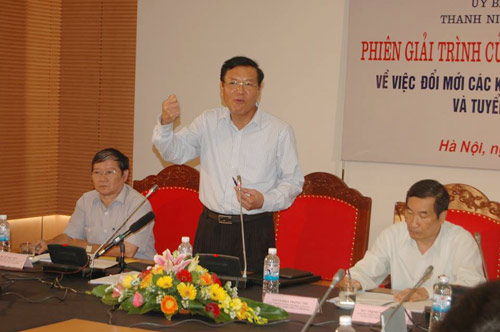

ĐBQH chất vấn Bộ trưởng GD về kỳ thi chung quốc gia
Sáng nay (23/9), Bộ trưởng Bộ GD-ĐT Phạm Vũ Luận đã có phiên giải trình tại Ủy ban Văn hóa Giáo dục Thanh thiếu niên và Nhi đồng của Quốc hội về việc đổi mới các kỳ thi tốt nghiệp THPT và tuyển sinh ĐH, CĐ năm 2015.
Tại đây, hầu hết các đại biểu tán thành phương án thi của Bộ GD-ĐT nhưng vẫn có một số đại biểu băn khoăn, lo lắng về việc tổ chức cụm thi ở kỳ thi quốc gia.

Sáng nay (23/9), Bộ trưởng Bộ GD-ĐT Phạm Vũ Luận đã có phiên giải trình về việc đổi mới các kỳ thi tốt nghiệp THPT và tuyển sinh ĐH, CĐ năm 2015.
Đại biểu lo lắng tính công bằng khi tổ chức cụm thi
Đại biểu Lê Minh Thông cho biết, hiện nay còn quá sớm để nói kỳ thi quốc gia có thành công hay không. Tuy nhiên, Bộ vẫn phải làm và có làm thì mới có kinh nghiệm được. Trong quá trình đổi mới sẽ phát hiện ra những thiếu sót để sửa đổi và hoàn thiện.
Về vấn đề cụm thi, đại biểu Thông băn khoăn: Trong kỳ thi sẽ có những loại cụm nào, tiêu chí nào để tổ chức theo cụm cũng như tiêu chí nào để chọn các trường đại học được chủ trì cụm thi?
Bộ trưởng Luận cho biết thêm, phương án của Bộ GD-ĐT là hướng đến tổ chức theo cụm thi, nhưng với học sinh chỉ có mục tiêu tốt nghiệp thì Bộ sẽ tổ chức cụm thi ở tỉnh để thí sinh đỡ đi lại, tốn kém.
Việc tổ chức coi thi, chấm thi theo cụm, Bộ sẽ tổ chức giám sát, thanh tra rất chặt chẽ trước và trong quá trình thi. Kể cả sau khi đã thi đỗ rồi thì công tác giám sát vẫn tiếp tục. Thậm chí, khi Bộ phát hiện thí sinh tiêu cực sẽ xử lý ngay, kể cả khi đang học ở đại học.
Việc thi theo cụm sẽ tổ chức liên tỉnh. Kỳ thi đại học “3 chung” trong những năm qua, Bộ đã tổ chức 4 cụm thi ở Tây Nguyên, Cần Thơ, Vinh, TP. Hải Phòng. Trước đây, tổ chức 2 kỳ thi thì sau khi thi xong tốt nghiệp, học sinh phải đến thi ở các cụm thi. Nhưng lần này, thí sinh chỉ đến cụm thi một lần. Với những học sinh ở vùng miền núi, do địa bàn đi lại khó khăn thì sẽ được thi ở cụm thi địa phương.
“Về tiêu chí trường tổ chức cụm thi, Bộ GD-ĐT sẽ căn cứ vào năng lực của các trường đại học (cơ sở vật chất, đội ngũ, kinh nghiệm tổ chức thi) để xác định trường đại học nào được chủ trì cụm thi”, Bộ trưởng Luận cho nói.
Bộ trưởng luận cho biết thêm, việc xét tốt nghiệp, năm 2014 đã làm là lấyđiểm thilớp 12 chiếm 50%, còn lại là lấy điểm thi ở kỳ thi tốt nghiệp. Các trường đã làm nghiêm vì giáo viên và học sinh đã có sự giám sát lẫn nhau. Phổ điểm năm 2014 cũng không có sự đột phá so với những năm trước. Qua đợt sơ tuyển của ĐH Bách Khoa Hà Nội cũng cho thấy không có sự chênh lệch lớn giữa điểm ở học bạ và trình độ của thí sinh.
Về khối thi, Bộ đã lắng nghe các trường thì thấy về cơ bản khối thi vẫn ổn định, một số trường có thể xác định thêm môn thi bổ sung.
Về thi ngoại ngữ: Nếu để môn này là môn tự chọn thì sợ học sinh lơ là. Do vậy, Bộ phải để môn này là môn thi bắt buộc nhưng vẫn trên cơ sở tạo điều kiện cho thí sinh. Với những học sinh có chứng chỉ quốc tế hay đoạt giải Olympic môn Ngoại ngữ, Bộ sẽ tính toán để thí sinh không phải thi. Bộ sẽ làm nghiêm và sẽ không có chuyện buông lỏng trong vấn đề này. Trong thời gian tới, Bộ GD-ĐT sẽ công bố cụ thể, rõ ràng nội dung này.
Việc đổi mới không gây sốc cho học sinh, giáo viên
Đại biểu Thúy ở Đà Nẵng đặt câu hỏi việc thay đổi phương án thi như vậy có gây bất ngờ cho thí sinh và giáo viên. Bộ có còn thay đổi nữa không?
Bộ trưởng Luận nói: “Tôi xin khẳng định không bất ngờ, mọi việc đều làm có lộ trình. Giáo viên và học sinh đón nhận không hề bất ngờ và trên thực tế kỳ thi đã được chuẩn bị từ năm 2014.
Bộ trưởng Luận cho hay, hiện nay không thể chờ đổi mới chương trình sách giáo khoa xong rồi mới đổi mới. Bộ phải thay đổi ngay từ phương pháp dạy và học. Việc thay đổi phương án thi trong năm 2014, 2015 đều hướng đến mục tiêu đổi mới phương pháp dạy và học.
Trong năm 2016, 2017 sẽ càng rõ hơn nữa. Tức là năm sau sẽ tiếp tục thay đổi nhưng sẽ thay đổi đúng hướng, theo đúng mục tiêu, lộ trình, không phải là đột ngột rẽ trái, rẽ phải. Thay đổi thi trong thời kỳ quá độ, không thể chấp nhận cái cũ nữa, nhưng cũng không thể đột ngột quá, mà cần có thời điểm quá độ để học sinh thích ứng. Vì vậy, trong năm sau sẽ tiếp tục có điều chỉnh để tiến dần tới các mục tiêu nâng cao chất lượng học sinh.
Theo Bộ trưởng Luận, kỳ thi năm 2015 nằm ở đề thi, thi để học sinh không còn học thuộc lòng mà theo hướng vận dụng kiến thức, hướng tới phát triển năng lực học sinh, từ đó thay đổi cách dạy và học.
Về quá trình đi tới phương án thi này, Bộ trưởng Luận khẳng định đã lấy ý kiến rộng rãi của toàn xã hội chứ không phải là chỉ trong ngành. Bộ GD-ĐT tiếp thu một cách cầu thị, sẵn sàng làm những gì khó khăn nhất để tạo thuận lợi nhất cho học sinh.